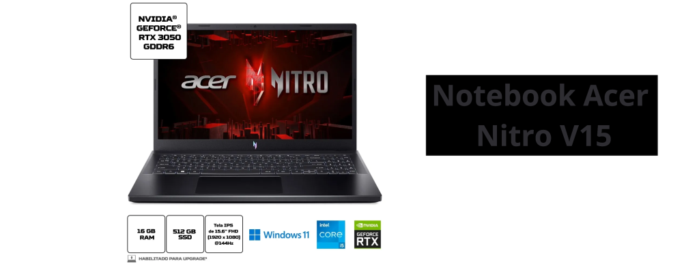

Notebook Acer Gamer: Qual o Melhor Modelo?

A Acer Inc. é uma multinacional de tecnologia de Taiwan, fundada em 1976, que rapidamente se consolidou como uma das líderes globais em inovação e fabricação de hardware. A empresa é amplamente conhecida por seus notebooks e desktops, abrangendo desde modelos de entrada acessíveis até dispositivos de alto desempenho, especialmente aclamados na linha de notebooks gamers, como a série Nitro e Predator. Sua abordagem ao desenvolvimento de produtos visa unir performance e custo-benefício, um fator que a torna competitiva tanto para consumidores casuais quanto para profissionais e gamers exigentes
Nos últimos anos, a Acer vem investindo em tecnologias de ponta, como inteligência artificial e realidade virtual, e trabalha constantemente para atender às necessidades do mercado em diferentes segmentos, incluindo educação, negócios e jogos. Com presença em mais de 160 países, a Acer reforça seu compromisso em oferecer dispositivos que atendam a diferentes perfis e necessidades, apostando também em práticas sustentáveis e em soluções para o futuro, como energias renováveis e economia circular em sua cadeia de produção.
Notebook Acer Gamer: Qual o Melhor Modelo para 2024?
Acer Nitro 17
Para quem busca desempenho em games sem abrir mão de preço acessível, os notebooks gamer da Acer são ótimas opções. Este ano, o destaque da marca é o Acer Nitro 17 com configurações robustas e recursos que entregam alta performance.
O Notebook Acer Gamer Nitro 17 (AN17-72), uma das principais apostas da Acer em 2024, é um modelo voltado para quem busca desempenho excepcional em jogos e tarefas de alto processamento. Equipado com processadores Intel Core da 14ª geração e opções de GPU NVIDIA GeForce RTX 4060, ele oferece um equilíbrio atraente entre custo e potência. A tela QHD de 17,3 polegadas, com taxa de atualização de 165 Hz e suporte ao NVIDIA Advanced Optimus, proporciona uma experiência de jogo imersiva e imagens cristalinas, ideais para títulos exigentes em qualidade gráfica
Outro ponto forte desse notebook Acer gamer é o sistema de refrigeração Avançado, que inclui tubos de calor e pasta térmica de metal líquido, prolongando a durabilidade e o desempenho das peças. O Nitro 17 também se destaca por suas opções de conectividade, como USB-C com Thunderbolt 4, HDMI 2.1, e Wi-Fi 6E, garantindo uma experiência estável e sem latência em jogos multiplayer.
O modelo Nitro 17 é uma ótima opção para gamers que buscam um notebook Acer gamer com excelente custo-benefício, sendo recomendado também para editores de vídeo e designers que dependem de processamento gráfico e velocidade. Além disso, o software NitroSense permite personalizar o desempenho do sistema e a iluminação RGB do teclado, criando uma experiência sob medida para o usuário.
Esse notebook Acer gamer é comercializado a partir de $1.249,99, tornando-se um concorrente direto de outras opções no segmento gamer, oferecendo um conjunto robusto de recursos que balanceiam preço e qualidade para quem busca desempenho avançado.
Acer Gamer Nitro V5
O Notebook Acer Gamer Nitro V5 é uma adição recente à linha de notebooks gamers da Acer, projetado para oferecer um desempenho impressionante em jogos e multitarefas. Equipado com as opções de placas de vídeo NVIDIA GeForce RTX da série 40, como a RTX 4050, ele utiliza a arquitetura NVIDIA Ada Lovelace, que permite suporte ao DLSS 3.5 e otimização de gráficos, essencial para games com muitos detalhes visuais. Esse modelo se destaca pela capacidade de combinar performance e acessibilidade, sendo uma excelente escolha para gamers casuais e entusiastas.
A tela Full HD de 15,6 polegadas, com uma taxa de atualização de 144 Hz, proporciona uma experiência visual fluida, ideal para jogos de ação e corrida, enquanto a tecnologia de refrigeração avançada mantém o desempenho constante. O Notebook Acer Gamer Nitro V5 também é otimizado para produtividade, com processadores Intel Core de 13ª geração e até 16 GB de memória RAM DDR5, garantindo uma experiência responsiva para rodar vários aplicativos ao mesmo tempo. A Acer ainda integrou portas Thunderbolt 4, HDMI 2.1 e compatibilidade com Wi-Fi 6, facilitando a conexão a acessórios e redes de alta velocidade
Para os jogadores que buscam um notebook Acer gamer confiável e acessível, o Nitro V5 é uma das opções mais equilibradas, combinando preço competitivo com configurações robustas para jogos e trabalho.